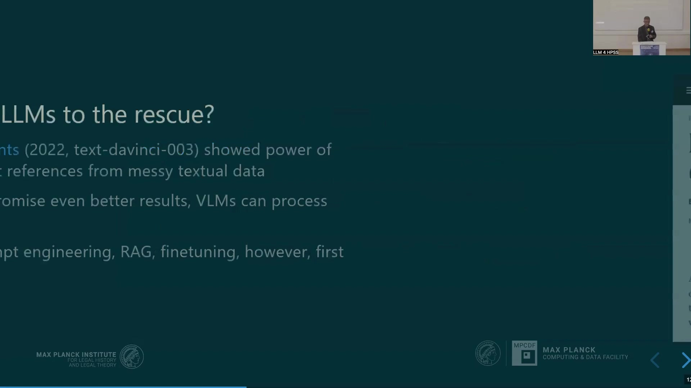
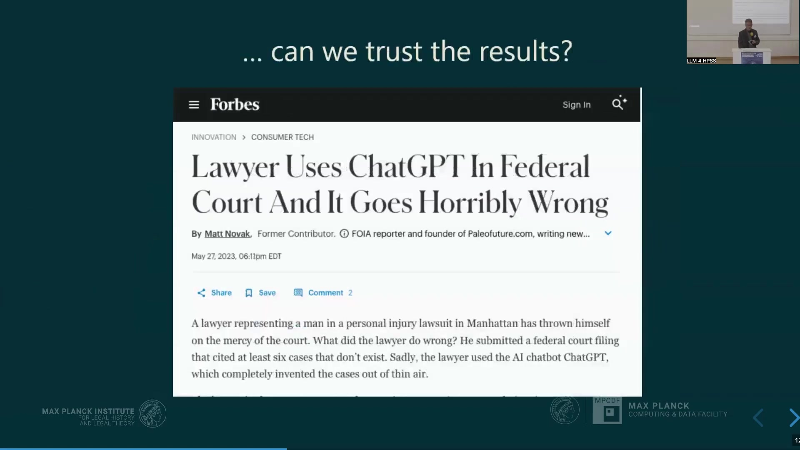
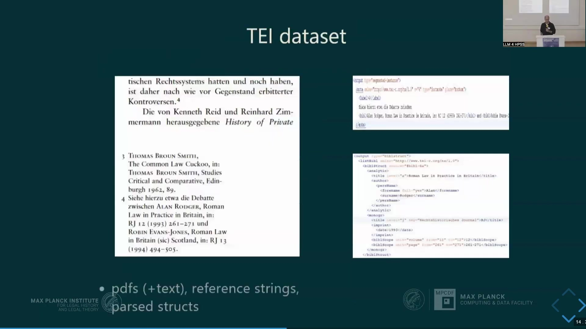

10 Parsing Footnotes in Law and Humanities Scholarship with Large Language Models
Overview
Researchers have long grappled with the persistent challenge of extracting citation data from the complex footnotes prevalent in law and humanities scholarship. Historically, bibliometric databases have offered inadequate coverage for these domains. This deficiency stems primarily from a lack of commercial interest, a focus on impact factors over intellectual history, and the inherent complexity of humanities footnotes. Moreover, traditional machine learning tools consistently demonstrate poor performance in parsing these intricate structures. Consequently, this project explores the utility of Large Language Models (LLMs) and Vision Language Models (VLMs) as a more effective solution.
A central tenet of this research involves establishing a robust testing and evaluation framework. To this end, scholars are developing a high-quality gold standard dataset, meticulously annotated using TEI XML encoding. This standard, well-established within the digital humanities, facilitates comprehensive representation of citation phenomena, including crucial contextual information. Furthermore, it ensures interoperability with existing tools such as Grobid, enabling direct performance comparisons.
To operationalise this approach, engineers crafted Llamore, a lightweight Python package. Llamore extracts citation data from raw text or PDFs, exporting it into TEI-formatted XML files. Crucially, it also evaluates extraction performance against gold standard references using an F1-score metric, which accounts for precision and recall through an unbalanced assignment problem. Initial evaluations reveal that whilst Llamore’s resource consumption exceeds that of traditional tools like Grobid for biomedical literature, it significantly outperforms Grobid when processing the challenging, footnoted humanities data. Future work aims to expand the training data, refine evaluation metrics, and enhance Llamore’s capabilities to capture contextual citation information and resolve complex stylistic variations.
10.1 Challenges in Humanities Citation Graph Generation
Researchers confront a significant challenge: Large Language Models and other algorithms currently struggle with the intricate footnotes characteristic of law and humanities scholarship. Generating comprehensive citation graphs from these sources represents a primary objective of our work. Such graphs prove invaluable for intellectual history, enabling scholars to discern patterns and relationships within knowledge production, trace intellectual influences, and quantify the reception of published ideas. For instance, one can readily identify the most cited authors within a specific journal over a defined period, as demonstrated by an analysis of the Journal of Law and Society between 1994 and 2003.
A fundamental impediment arises from the extremely poor coverage of historical Social Sciences and Humanities (SSH) literature within existing bibliometric data sources. Leading platforms, including Web of Science, Scopus, and OpenAlex, exhibit substantial deficiencies in this regard. Web of Science and Scopus, moreover, impose prohibitive costs and restrictive licensing terms, hindering open research initiatives. Whilst OpenAlex offers an open-access alternative, it too lacks comprehensive coverage for many A-journals, pre-digital content, and non-English language publications. For example, the Zeitschrift für Rechtssoziologie, established in 1980, shows negligible citation data before the 2000s within these widely used databases.
Several factors contribute to this persistent data gap. Commercial entities demonstrate limited financial interest in humanities scholarship, unlike their engagement with STEM, medicine, and economics. Furthermore, these databases prioritise “impact factor” metrics for scientific evaluation, a focus that diverges significantly from the needs of intellectual history research. Crucially, the pervasive use of complex footnotes within humanities literature presents a unique parsing challenge, which traditional systems have consistently struggled to overcome.
10.2 Large Language Models and Footnote Complexity
A second, equally pressing problem arises from the inherent complexity of humanities footnotes, often termed “footnotes from hell.” These structures frequently incorporate extensive commentary, extraneous content, and non-reference text, embedding the actual citations within considerable noise. Traditional instruments for extracting such information necessitate laborious manual annotation. Moreover, conventional machine learning tools, including those based on conditional random forests, consistently exhibit poor performance when faced with these intricate structures. For instance, the ExCite Performance study (Boulanger/Iurshina 2022) reported low extraction and segmentation accuracies across various training datasets, with combined data yielding an extraction accuracy of merely 0.22 and segmentation accuracy of 0.47. This highlights the limitations of previous approaches.
Consequently, researchers have turned to Large Language Models (LLMs) as a promising alternative. Initial experiments in 2022, utilising models such as text-davinci-003, demonstrated LLMs’ considerable capacity for extracting references from highly unstructured textual data. Newer models offer even greater potential, whilst Vision Language Models (VLMs) extend this capability to direct processing of PDF documents. Developers employ various methods, including prompt engineering, Retrieval-Augmented Generation (RAG), and fine-tuning, to optimise these models for specific tasks. RAG, for example, enhances LLM outputs by retrieving relevant information from a knowledge base before generating a response, thereby improving accuracy and reducing hallucinations.
Nevertheless, a crucial concern persists regarding the trustworthiness of LLM-generated results, particularly the risk of hallucinations. A notable incident involved a lawyer who, relying on ChatGPT, submitted a federal court filing citing at least six non-existent cases. Addressing this fundamental issue demands a robust testing and evaluation solution. Such a solution requires a high-quality gold standard dataset, a flexible framework capable of adapting to the rapidly evolving technology landscape, and solid testing algorithms to generate comparable performance metrics.
10.3 Developing a TEI-Annotated Gold Standard

To address the need for reliable evaluation, researchers have embarked upon compiling a comprehensive training and evaluation dataset, employing TEI XML encoding. This choice rests upon several compelling reasons. TEI XML represents a well-established, precisely specified, and comprehensive standard for text interchange within the digital humanities. Crucially, it encompasses a far broader range of phenomena than more restrictive bibliographical standards, such as CSL or BibTeX. Indeed, TEI extends beyond mere reference management, allowing for the encoding of citations, cross-references, and other contextual markup, which proves vital for classifying citation intention. Furthermore, adopting this standard enables the project to leverage existing digital editions, text collections, and corpora, thereby enhancing the generalisation and robustness of the developed mechanisms.
Nevertheless, the TEI standard presents its own set of challenges, both conceptual and technical. Conceptual difficulties arise in differentiating between pointers (references to a specific part of a text) and references (full bibliographical entries), whilst technical complexities involve managing constrained elements (e.g., specific fields within a citation) versus elliptic material (e.g., abbreviations like ibid. or op. cit.). Despite these hurdles, the dataset’s establishment progresses steadily. The encoding process involves multiple stages: capturing PDF screenshots, segmenting reference strings to distinguish them from non-reference footnote text, and finally, generating parsed structured data.
The dataset currently comprises 1,100 footnotes and endnotes, drawn from 25 articles across 10 Directory of Open Access Journals (DOAJ) titles. It specifically focuses on humanities scholarship, particularly legal and historical texts, and encompasses a diverse range of languages, including French, German, Spanish, Italian, and Portuguese, spanning the period from 1958 to 2018. Researchers estimate the dataset will contain over 1,600 references, with individual occurrences encoded separately to preserve contextual information. Notably, the project adjusted its strategy midway, shifting to Open Access journals and incorporating PDFs to facilitate Vision Language Model (VLM) mechanisms and enable the full publication of the dataset.
The interoperability afforded by the TEI XML standard offers a significant advantage, enabling seamless integration with existing tooling. Grobid, a widely recognised tool for reference and information extraction, notably utilises TEI XML for its training and evaluation processes. Consequently, this shared data format permits direct performance comparisons with Grobid and facilitates the exchange of training data, benefiting both the project and the broader research community.
10.4 Llamore: A Python Package for Reference Extraction

Researchers have developed Llamore, a Python package acronym for “Large LANguage MOdels for Reference Extraction.” This tool facilitates two primary functions: extracting citation data from raw text or PDF inputs using multimodal Large Language Models, and subsequently evaluating the extraction performance. The workflow proceeds from text or PDF documents, through Llamore, to produce references in TEI XML format. These extracted references then undergo comparison with gold standard references, yielding an F1-score as an evaluation metric.
Crafting Llamore involved two key objectives. Firstly, the package needed to remain lightweight, comprising fewer than 2,000 lines of code. Crucially, Llamore operates as an interface to a model of the user’s choosing, rather than embedding any specific model directly. Secondly, this design ensures broad compatibility with both open and closed Large Language Models and Vision Language Models, offering flexibility to researchers.
Implementing Llamore proves straightforward. Users can install the package directly from PyPI using pip install llamore. For extraction, one imports the relevant extractor, such as GeminiExtractor or OpenaiExtractor, then instantiates it with an API key. The extractor processes either a PDF file path or a raw input string, returning a collection of references that can then be exported to a TEI XML file. Notably, the OpenaiExtractor provides compatibility with numerous open model serving frameworks, including Olama and VLLM, which offer OpenAI-compatible API endpoints. For evaluation, users import the F1 class, configure it (e.g., levenshtein_distance=0 for exact matches), and compute the macro average F1-score by supplying both the extracted and gold references.
Llamore employs the F1-score, a widely recognised metric for comparing structured data, to assess extraction performance. This score combines precision (the ratio of correctly identified elements to all predicted elements) and recall (the ratio of correctly identified elements to all actual elements in the gold standard) into a single harmonic mean. A perfect extraction yields an F1-score of 1, whilst an F1-score of 0 indicates no matches. For instance, in comparing an extracted reference to a gold standard, Llamore identifies matches for analytic_title, monographic_title, authors.surname, and publication_date, whilst noting a minor discrepancy in authors.forename due to an extraneous character in the gold reference. Furthermore, Llamore addresses the complex task of aligning extracted references with gold references by framing it as an unbalanced assignment problem. The tool computes F1 scores for every possible combination, constructs a matrix, and then maximises the total F1-score whilst ensuring a unique assignment, utilising SciPy’s solver for this optimisation. Significantly, the system penalises both missing and hallucinated references by assigning them an F1-score of zero.
10.5 Performance Analysis and Future Directions

Initial performance evaluations provide crucial insights into Llamore’s efficacy across diverse datasets. When tested on the PLOS 1000 Dataset, which comprises 1,000 biomedical PDFs and demands exact matches, Grobid achieved an F1 score of 0.61, whilst Llamore, utilising Gemini 2.0 Flash, attained a comparable F1 score of 0.62. However, for literature on which Grobid was specifically trained, it demonstrates superior efficiency, operating considerably faster and with fewer computational resources; Llamore’s compute requirements, conversely, are orders of magnitude greater.
A more compelling distinction emerges when evaluating performance on the project’s bespoke humanities dataset, which features complex footnotes and also requires exact matches. Here, Grobid struggles significantly, yielding an F1 score of only 0.14, largely due to its training data being out of distribution for such intricate structures. In stark contrast, Llamore (Gemini 2.0 Flash) achieves an F1 score of 0.45, representing a threefold improvement in performance. This initial evaluation clearly demonstrates Llamore’s superior capability in handling the unique challenges posed by humanities footnotes, validating the utility of LLMs for this specific domain. Nevertheless, this current performance metric pertains solely to pure reference extraction, excluding the capture of contextual information or cross-referencing.
Future work outlines several key objectives. Researchers plan to generate additional training data and further refine the test metrics to encompass a broader range of citation phenomena. Crucially, they aim to extend Llamore’s capabilities to support citations in context, discerning whether a work is cited approvingly or critically. Furthermore, the tool will incorporate features for resolving op cit. references, identifying specific pages cited, and quantifying multiple citations to the same work.
Addressing these enhancements will necessitate overcoming several challenges. These include the wide variation in citation styles (e.g., differentiating between volumes and pages, or first page versus cited page), the complexities of multilingual terminology (e.g., diverse contributor roles like “eds” or “hrsg. v.”, and special terms such as passim, ibid, or n.d.), the intricacies of canonical citations prevalent in fields like Bible studies or Roman law, and the accurate handling of ellipses, abbreviations, and cross-references. Overcoming these hurdles will significantly enhance Llamore’s utility for advanced scholarly analysis. ```